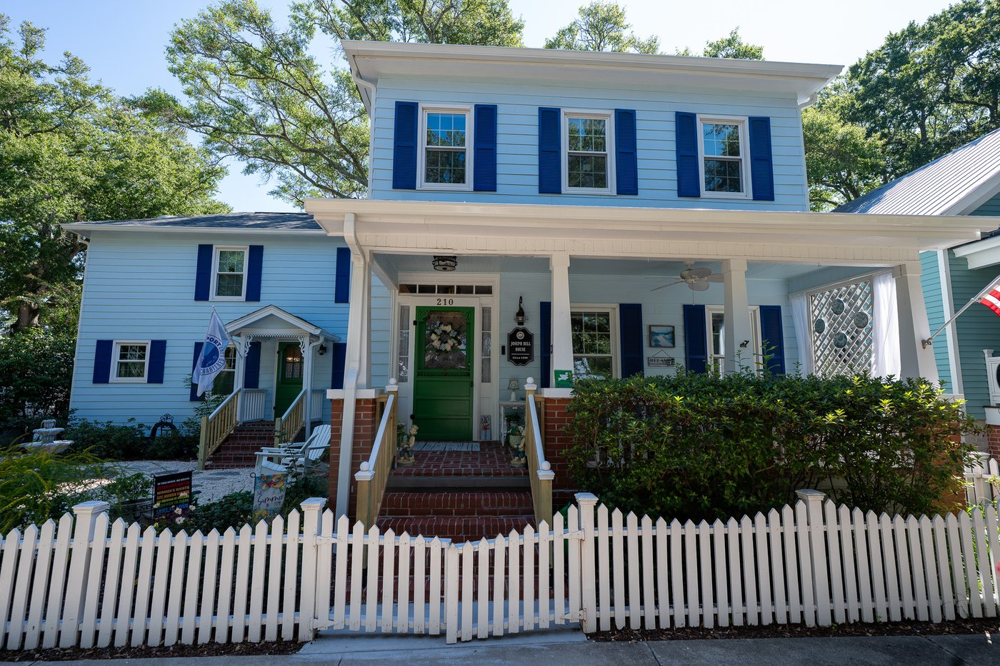

The History of 210 N. Lord St., the J. Bell House

Though not originally from Southport, by the time Joseph and Susan Bell built their home on Lord Street around 1890, they were already well-respected Southport residents. Their personal story reflects the challenges and hopes of their coastal community, which had been shaped by war, storms, shifting economies, and the promise of new beginnings. Their home at 210 North Lord Street, situated on Lot 62 of the original 100 lots of Southport, still stands today because of the couple’s resilience, careful planning, and deep investment in the town’s future.
Early Life and War Years
Joseph A. Bell was born around 1838 in Carteret County, North Carolina, a place where life had always been tied to water through maritime trades, fishing, and coastal commerce. Before the Civil War, he worked as a merchant, part of the bustling Atlantic trade system that supported towns like Beaufort and New Bern.
Young Bell enlisted in the Confederacy in May 1861, a mere five days after North Carolina seceded from the Union. He became a Private in the 1st North Carolina Light Artillery, defending Fort Macon, the fort that protected the coastline and communities where he had grown up. From the beginning, the war was very personal for Bell, as he was defending his homeland against invasion.
Starting in March 1862, Union forces began a month-long siege of Fort Macon and the surrounding area. It culminated in an 11-hour bombardment of the fort. Union forces closed in from land and sea. Although the fort was battered, it remained structurally sound, which was a testament to its thick brick casemates and earthen reinforcements. But in the end, the fort’s Confederate defenders, including Bell, were forced to surrender. Once captured, Bell was sent north to Fort Columbus on Governor’s Island in New York Harbor. He spent several months there enduring harsh military prison conditions such as crowded barracks, strict discipline, short rations, and the uncertainty of when, or if, he might return home.
In late 1862, Bell was released in a prisoner exchange. Although freed, he was unable to return home to Carteret County as it was under Union control. He likely tried to make his way to a Confederate unit to rejoin the fight. But he never had a chance because he was captured again only three weeks after his release. This time, he was sent to Capitol Prison in Washington, D.C. There, he suffered brutal conditions before being released once more in a prisoner exchange.
Following this second release, Bell rejoined his unit and continued to serve until the end of the war, protecting the Cape Fear defenses around Wilmington, Fort Fisher, and Fort Caswell.
Coming to Southport and the Lighthouse Years
Following the war, Joseph was at last able to return to his home in Carteret County, which had been under Union control for three years. He was reunited with his first love, Susan Frances Bell. (Despite the same last name, it appears they were not related.) Susan’s father had died a decade before the war started. She and her two sisters had endured three years of Union occupation on their own. Then, in 1866, after they had each endured years of hardship and loneliness, Joseph, 28, and Susan, 24, were wed.
The couple first settled in New Bern, where Joseph became a merchant. He did well for himself. By 1870, he had $1500 in real estate and $500 in personal property. But at some point, the couple decided to relocate to Smithville.
In 1879, a “Joseph Bell” was appointed the first lighthouse keeper of Old Baldy after the tower was refitted and relit. The 1880 census lists this keeper and his wife as “Joseph and Eliza Bell,” which is a confusing detail, since no such couple has been found anywhere else in Carteret or Brunswick Counties. The ages align exactly with Joseph and Susan (aka Susie), and census takers were known to mis-record names on occasion. Thus far, no competing “Joseph Bell” has been found in the region to fit the profile.
Several clues support that the lightkeeper was Joseph A. Bell of Carteret County:
Lighthouse keepers had to be literate to read technical instructions, fill out daily logbooks, record weather data, and maintain correspondence with the Lighthouse Board. Several census documents confirm Joseph could read and write. Even after Reconstruction ended in 1877, federal lighthouse appointments in coastal North Carolina tended to favor men aligned with the Republican Party. Joseph A. Bell was publicly and consistently Republican, which was a rare and sometimes unpopular stance in North Carolina. The keeper’s reputation had to be impeccable: sober, steady, mechanically capable, and trustworthy. These characteristics match Bell’s standing in Southport as both a veteran and a respected merchant.
Taken together, the evidence makes a credible case that Joseph and Susan Bell were the couple at Old Baldy in 1879–1881, even if the census recorded her name incorrectly. His service at the lighthouse lasted only two years, after which he began to transition to life as a merchant.
The 1884 Free Trader Arrangement
By the mid-1880s, Joseph had returned to his roots as a merchant in Southport. But coastal commerce was risky. Goods were often sold on credit, and storms could delay shipments. One bad hurricane season could sink a family business.
In April 1884, Joseph and Susan Bell made a financial decision that was becoming increasingly common for coastal families navigating the uncertain post–Civil War economy. Just the year before, North Carolina had updated its legal code to strengthen a married woman’s right to own property and manage business affairs in her own name. Using this new legal framework, Susan, with Joseph’s consent, formally registered as a “free trader,” a status that allowed her to buy, sell, and make contracts independently of her husband.
This concept, known in older statutes as the “feme sole trader” system, had existed since the 1840s, but North Carolina’s post-war constitution of 1868 and the revised 1883 code had transformed it into a much more practical and protective tool. By filing in 1884, Susan joined the early wave of women who used this strengthened law to help stabilize and safeguard their families’ finances.
Immediately after her registration, Joseph transferred his existing store merchandise and personal property into Susan’s legal ownership. He continued operating the store as its day-to-day merchant, but now under the umbrella of Susan’s independent legal status. If business slowed or creditors pressed him, as often happened in the volatile retail climate of the 1880s and 1890s, claims could be directed at him personally, but not at the assets legally registered in Susan’s name.
For the Bells, this was a sensible, forward-looking strategy. It allowed Joseph to take entrepreneurial risks he deemed necessary to grow his mercantile business while giving the couple a measure of protection against downturns or unexpected debt. Their choices reflect the careful planning that prudent merchant families used during this era, especially in small coastal towns where economic fortunes could rise and fall with the tides.
The Prosperous 1880s and the Building of the House in 1890
During the 1880s, Joseph Bell became a well-respected businessman in Southport. His newspaper advertisements show a thriving operation with a wide inventory of goods available at a competitive price. Like many Southport businessmen, he eagerly anticipated the arrival of a major railroad that promised increased prosperity. Bell invested heavily to be ready for the expected boom.
In 1890, at the peak of their success, the Bells built their home on Lord Street, today’s 210 North Lord. The architectural details suggest a home built with pride and with means: coffered ceilings, medallions, stained glass, multiple fireplaces, and distinctive Southport bows.
The Panic of the 1890s and Business Collapse
Unfortunately, the prosperity did not last. The national Panic of 1893 triggered a major recession that hit small Southern merchants hard. Prices fell, credit tightened, and consumer spending collapsed. The promised railroad disappeared. Joseph did his best to adapt. He switched from dry goods to groceries and stopped accepting credit for purchases to improve his cash flow. But the economic downturn was too deep and went on for too long.
By 1894, Bell was forced to assign his business assets to settle debts. His business continued for a while under a new name but the building was eventually taken over by W. H. Hood in 1900. Today, the store’s location, 129 E. Moore Street, is home to the Dosher Hospital Flea Market.
Because of their business losses, the Bells were forced to divide their home property in half, assigning the southern lot to Susan’s widowed sister, Mariah, to settle outstanding debts. However, they were able to keep the northern half of the property that contained their family home. It’s possible that Susan’s status as a free trader, which protected any business profits, helped shelter some of their assets as well.
After his store closed, Joseph became a salesman in a local meat market. It was a position he kept until his death in 1913 at the age of 75. Susan lived four years longer, also dying at the age of 75. Her only nephew, Percy, lived with her in her Lord St. home and cared for her in her widowhood. Upon her death, she was remembered as a lady of most estimable qualities who was beloved by many. Joseph was also honored as a businessman and a veteran.
How the Modern Lot Came to Be
In the 1800s, Lot 62 was subdivided into five 66’ x 66’ sub-lots. The Bells owned two of the middle lots, adjacent to each other. They built their house on one lot and left the other undeveloped. In 1894, they assigned the undeveloped lot to Susan’s sister, Mariah, to settle outstanding debts. When Mariah died in 1902, her property was inherited by her only child, Percy.
Susan and Joseph had no children of their own so Percy was their only heir as well. In 1917, when they had both passed away, he inherited their lot with the family home. At some point, these two lots were rejoined. The present-day lot for 210 N. Lord Street is back to the original 132’ x 66’ dimensions that it had when Joseph and Susan originally developed it.
Today, the J. Bell house stands as a testament to resilience, thoughtful planning, and deep family ties. Its history reflects Southport’s enduring tradition of leaning into hardship while leaning on the bonds of community.
Notes from the Current Owner
The current owners particularly like the original features of the home which include the coffered ceiling, ceiling medallion, chandelier, and figurehead in the living room, four fireplaces, a vintage door with stained glass in the upstairs bathroom, crown moulding in the primary bedroom, and Southport bows.
The current owners have made some upgrades to the original design including remodeling the kitchen and bathrooms, installing a swimming pool, adding a new backyard deck and completely renovating the landscape.